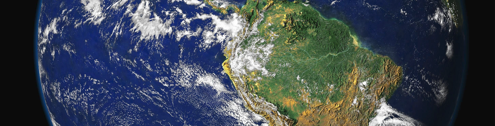
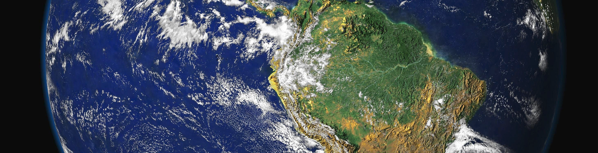

Procesamiento Digital (Parte 1)
ANÁLISIS DE IMÁGENES SATELITALES PARA EL ESTUDIO DE LA SUPERFICIE TERRESTRE

Obra publicada con Licencia Creative Commons Reconocimiento Compartir igual 4.0

Obra publicada con Licencia Creative Commons Reconocimiento Compartir igual 4.0